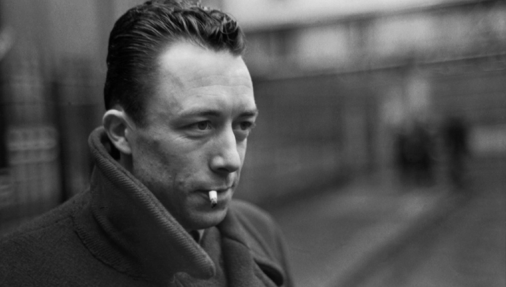
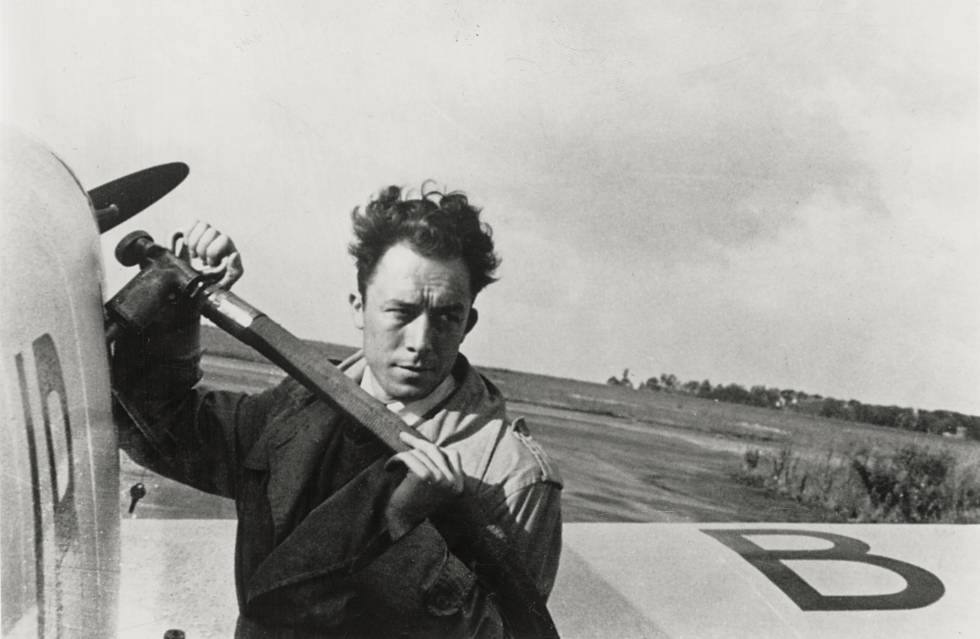

 Comenzó a escribir a muy temprana edad: sus primeros textos fueron publicados en la revista Sud en 1932. Dos años antes del estallido de la Segunda Guerra Mundial, Camus fue periodista del Alger Républicain. Ahí publicó distintos artículos que analizan la situación social de los musulmanes en la región de la Kabylia. Estos artículos, publicados posteriormente en Actuelles III (1958), llamaron la atención con respecto a las muchas injusticias que posteriormente desencadenaron la Guerra de Argelia de 1954. Camus se relacionó más con corrientes humanitarias, más que político-ideológicas, y sostenía la importancia del papel de Francia en Argelia, aunque no ignoraba las injusticias coloniales.5 En 1934, contrae matrimonio con Simone Hié, pero el matrimonio termina rápidamente por infidelidades de ambas partes. En el año 1935, comenzó a escribir El revés y el derecho, el cual fue publicado dos años más tarde. En esta primera publicación, describe la situación de su vida en los años de su niñez, y retrata figuras importantes para él, como son su madre, su tío y su abuela.6 En Argel funda el Teatro del Trabajo,7 que en 1937 reemplaza por el Teatro del Equipo, el cual buscaba llevar obras de calidad a las clases trabajadoras. En 1938 publicó Nupcias, obra conformada por una serie de meditaciones líricas sobre el campo de Argelia; presenta la belleza natural como una forma de riqueza que todo ser humano, hasta el más pobre, puede disfrutar.8 En esos años, Camus abandona el Partido Comunista por serias discrepancias, como el Pacto germano-soviético y su apoyo a la autonomía del PC de Argelia respecto al Partido Comunista Francés. Entra a trabajar en el Diario del Frente Popular, creado por Pascal Pia: su investigación La miseria de la Kabylia tiene un resonante impacto. En 1940, el Gobierno General de Argelia prohíbe la publicación del diario y maniobra para que Camus no pueda encontrar trabajo. Él emigró entonces a París y trabajó como secretario de redacción en el diario Paris-Soir. Este mismo año, se casó con Francine Faure, pianista y matemática. Con ella tuvo un par de mellizos, Catherine y Jean. Al poco tiempo, mantuvo un amorío público con la actriz española María Casares que duró dieciséis años,9 con una breve interrupción de dos años.10 A pesar de las numerosas aventuras extramatrimoniales de Albert Camus, él y su segunda esposa (Francine Faure), siempre se amaron [Catherine Camus - L'Obs, 20 novembre 2009].1112 En 1942, publicó su primera novela El extranjero. Ese mismo año, publicó El mito de sísifo, donde desarrolla sus ideas sobre el absurdo.13 En 1943, trabajó como lector de textos para Gallimard, importante casa editorial parisina, y tomó la dirección de la publicación de resistencia Combat cuando Pascal Pia fue llamado a ocupar otras funciones en el movimiento contra los alemanes. En la posguerra, tras la salida de los alemanes, siguió editando esta publicación, la cual mantuvo una postura independiente de izquierda, basada en los ideales de justicia y verdad.14 En 1944 y 1945, respectivamente, escribió las obras El malentendido y Calígula, ambas consideradas como teatro del absurdo. En 1947 publicó su segunda novela, La peste. Charles Coulomb fue el primero que comprobó que la interacción entre cargas eléctricas o electrónicas puntuales también varía según la ley de la inversa del cuadrado de la distancia (1784).

ABSURDISMO
Esta idea del absurdo presupone que el ser humano busca un significado del mundo, de la vida humana y de la historia, el cual sustente sus ideales y valores. Se desea la seguridad de que la realidad es un proceso teleológico inteligible, que contiene un orden moral objetivo. Puesto en otras palabras, se busca una certeza metafísica de que la vida es parte de un proceso inteligible direccionado a un objetivo ideal, y que detrás de los valores personales se encuentra el sustento del universo o de la realidad como totalidad.23
Los líderes religiosos y los creadores de sistemas y visiones del mundo metafísicos han tratado de saciar esta necesidad. Pero sus interpretaciones del mundo no se sostienen ante la crítica. El mundo se revela, para un ser humano sensible, sin ningún propósito o significado determinado. El mundo no es racional. De ahí surge el sentimiento del absurdo (le sentiment de l'absurde).24
Hablando estrictamente, el mundo no es absurdo por sí mismo: simplemente es. “El absurdo surge de la confrontación entre la búsqueda del ser humano y el silencio irracional del mundo”.25 Lo llama “nostalgia irracional y humana”, y ocurre cuando nuestra necesidad de significado se quiebra ante la indiferencia del mundo, inamovible y absoluta. Por lo tanto, el absurdo no es un estado autónomo; no existe en el mundo, sino que surge del abismo que nos separa de él.26
Este sentimiento puede manifestarse de distintas maneras, como por ejemplo: la percepción de la indiferencia de la naturaleza ante los valores y los ideales del ser humano, la consciencia de la fatalidad de la muerte, o el impacto provocado por la percepción del sinsentido de la cotidianidad.27 Camus exhorta a la exploración de este silencio como búsqueda de verdad, aunque en ella se vuelva más latente el silencio del mundo. “Buscar lo que es verdad no es buscar lo que se desea”.28
Camus trata frecuentemente el problema del suicidio. Esta acción, sin embargo, no es la acción recomendada por Camus. En su opinión, el suicidio es rendirse ante el absurdo. La dignidad humana se revela cuando se vive en la consciencia del absurdo, y aun así uno se rebela contra él a través de un compromiso con sus propios ideales. Él deja claro que el hecho de que cada persona pueda encontrar sus propios valores, no quiere decir que se recomiende el crimen: “Si todas las experiencias son indiferentes, la experiencia del deber es tan legítima como cualquier otra. Uno puede ser virtuoso por capricho”.29
Camus sostenía el origen humano de todo juicio moral. Él, aunque no aceptaba para sí mismo el cristianismo, lo reconocía como una forma válida de significar al mundo; rechazaba la institución de la Iglesia, a la cual consideraba alejada de su inspiración original. Sin embargo, pensaba que la moralidad, en tanto que humana, debe separarse del pensamiento religioso: “Cuando el hombre somete a Dios a un juicio moral, lo mata en su corazón”.30
Estaba convencido de que el hombre no puede vivir sin valores; si uno elige vivir, por ese mismo hecho afirma un valor, el que la vida vale la pena de ser vivida o que puede hacerse digna de ser vivida.
Lo anterior se refiere a sólidos, en los fluidos en reposo las fuerzas internas dependen esencialmente de la presión, y en los fluidos en movimiento también la viscosidad puede desempeñar un papel importante.
p>